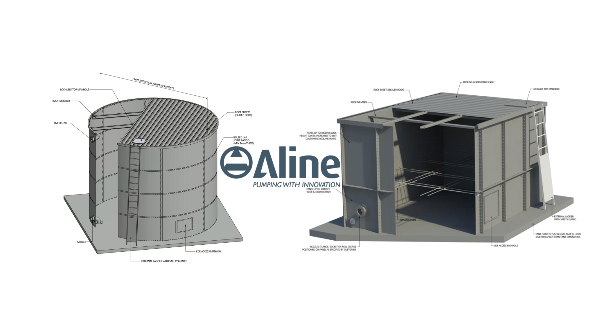
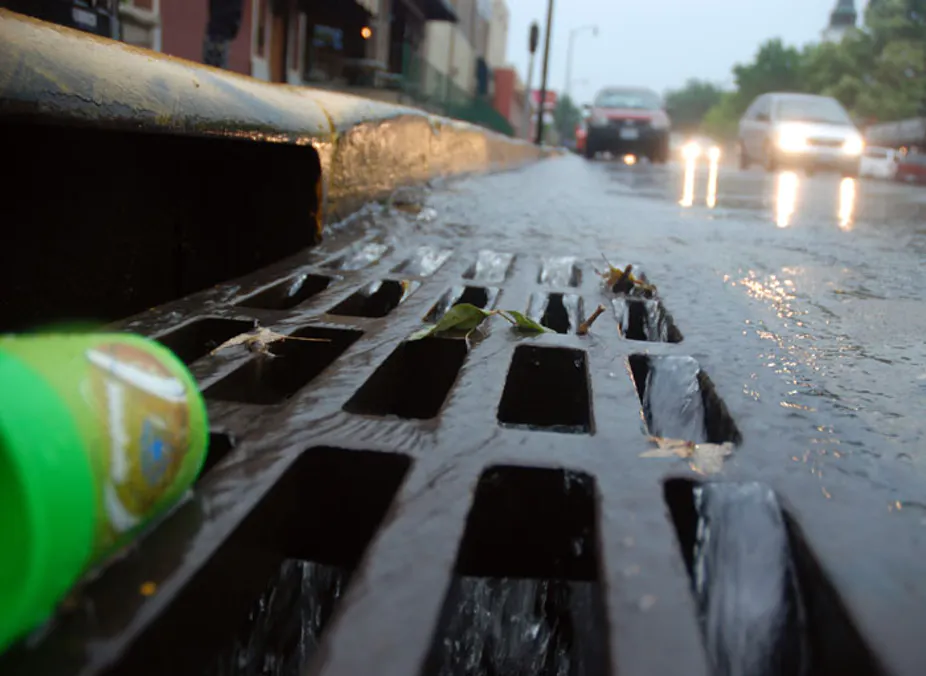
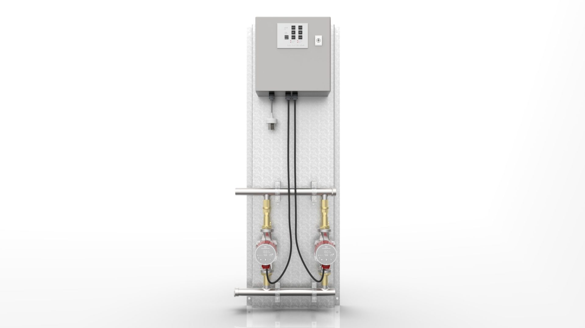
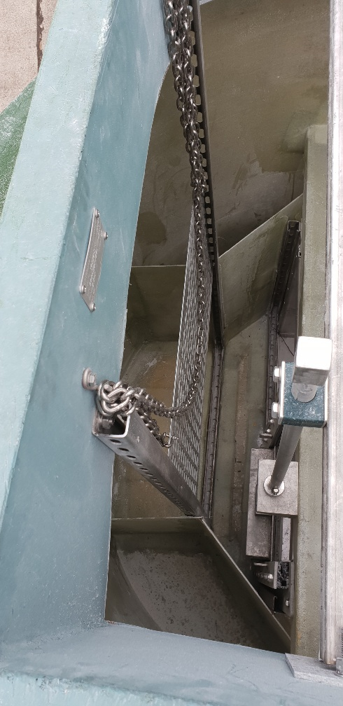

The Importance of Water Storage Tanks
Water tanks are designed to collect and store rainwater for later use – reducing reliance on mains water and providing a valuable backup supply.…
Read articleAline Water Storage tanks are a complete water storage solution for any environment or remote location.
A range of square and round steel storage tanks are offered to accommodate your practical needs. Both varieties feature bolt reinforcement and are designed to hold large capacities of water for heavy-duty building services, agricultural and industrial uses.

2 products
Water tanks are designed to collect and store rainwater for later use – reducing reliance on mains water and providing a valuable backup supply.…
Read article
Water tanks come in various shapes – most commonly round and square – to suit different space, capacity, and design requirements. Choosing the right…
Read article
A water pressure booster pump increases water pressure and flow in buildings where mains supply is insufficient. These pumps draw water from a…
Read article
Rain that runs off roofs, roads and paved areas enters the stormwater system. From there, it may flow through drains, pits and pipes to a waterway or…
Read article
In systems with long pipe runs, cooled water may flow from a hot tap before hot water arrives. Hot water circulator pumps move water around the…
Read article
Installation of dual submersible XRipper wastewater grinders into a fibreglass tank.
Read articleAsk our team to confirm the right fit for your application.
Ask for product adviceIndustrial water storage tanks are available in a wide range of sizes to accommodate various needs:
Custom sizes and configurations are also available to meet specific industry requirements.
Send your application requirements to Aline Pumps or call 1800 018 999.